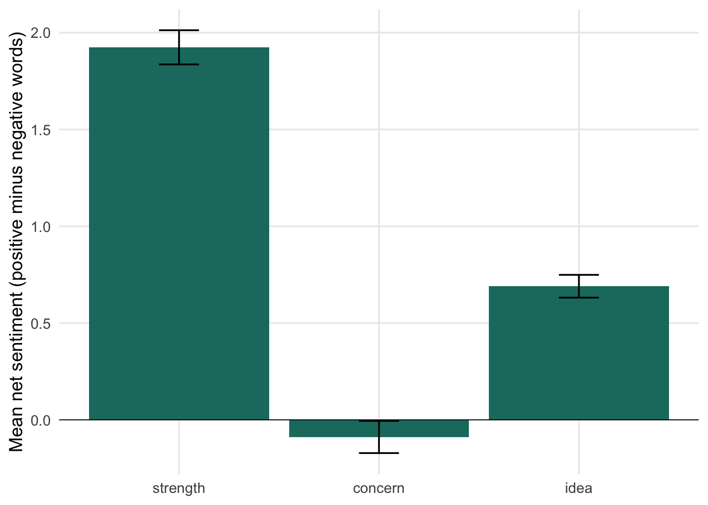
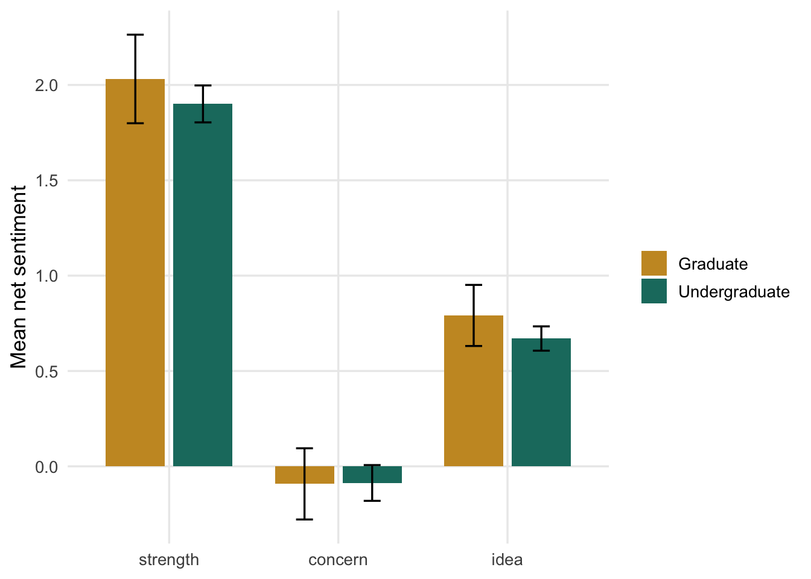
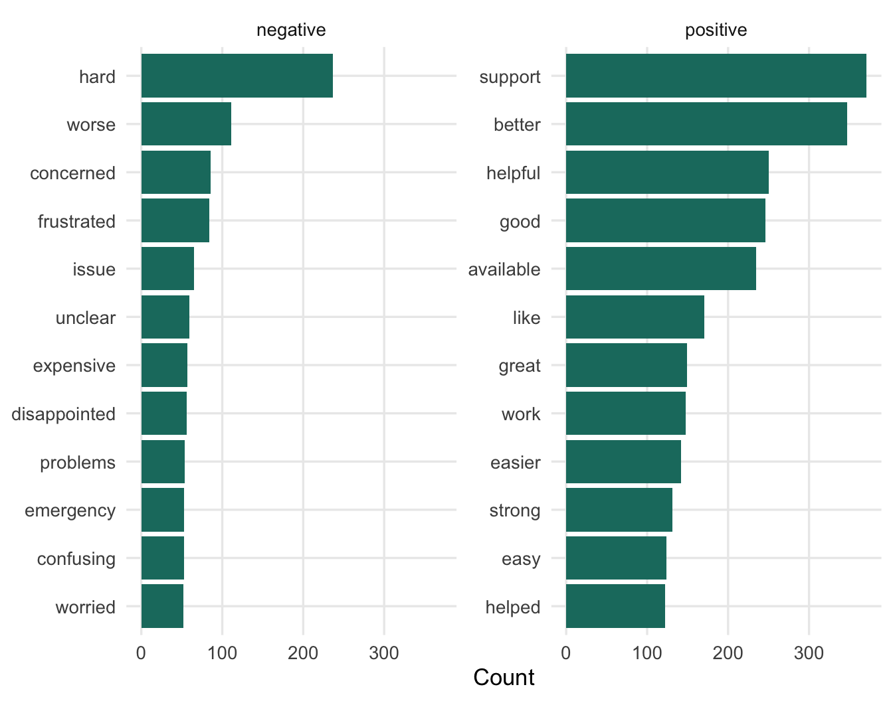

6 Sentiment Analysis
Data for this chapter: data/vcu_cares_long.csv
Sentiment analysis asks how positive or negative the language is. The simplest version is lexicon-based: take a dictionary that labels words as positive or negative, count the positive and negative words in each answer, and subtract. That is what we do here. It is transparent, it needs no training data, and it fails in instructive ways.
By the end of this chapter you will be able to score text with a sentiment lexicon, compare scores across groups, and, most importantly, check whether the scores mean what they appear to mean.
6.1 Sentiment lexicons
A lexicon is a word list with labels attached. A sentiment lexicon labels each word as positive or negative (or gives it a score). tidytext ships the Bing lexicon (Hu & Liu, 2004), which marks about 6,800 words as positive or negative.
bing <- get_sentiments("bing")
bing |> count(sentiment)# A tibble: 2 × 2
sentiment n
<chr> <int>
1 negative 4781
2 positive 2005head(bing, 8)# A tibble: 8 × 2
word sentiment
<chr> <chr>
1 2-faces negative
2 abnormal negative
3 abolish negative
4 abominable negative
5 abominably negative
6 abominate negative
7 abomination negative
8 abort negative get_sentiments("bing") loads the lexicon as a table with two columns: word and sentiment. The second line counts how many words are labeled positive and how many negative, and head(bing, 8) shows the first eight rows. (The Bing lexicon has more negative words than positive ones, a common feature of English that matters when we compare scores.)
Two other lexicons are common.
| Lexicon | What it gives you |
|---|---|
| Bing | Each word is positive or negative |
| AFINN | Each word has a score from -5 (very negative) to +5 (very positive), so you get intensity |
| NRC | Each word is tagged with emotions such as trust, fear, anger, and joy |
AFINN and NRC are available through get_sentiments(), but they require the textdata package and a one-time download that asks you to accept a license, so we stick with Bing for reproducibility.
6.2 Scoring each answer
The steps: split the text into words, join the words to the lexicon, and count. Words that are not in the lexicon simply drop out.
tokens <- vcu |>
unnest_tokens(word, text)
scores <- tokens |>
inner_join(bing, by = "word") |>
count(doc_id, sentiment) |>
pivot_wider(names_from = sentiment, values_from = n, values_fill = 0) |>
mutate(net = positive - negative)
# Attach back to every answer; answers with no lexicon words score 0
vcu_sent <- vcu |>
left_join(scores, by = "doc_id") |>
mutate(across(c(positive, negative, net), \(x) replace_na(x, 0)),
n_words = str_count(text, "\\S+"))
summary(vcu_sent$net) Min. 1st Qu. Median Mean 3rd Qu. Max.
-6.0000 0.0000 1.0000 0.8843 2.0000 10.0000 mean(vcu_sent$net == 0)[1] 0.3097448This block does two things: it scores the sentiment words, and then it attaches those scores back to the full list of answers.
Part 1: build the scores.
-
unnest_tokens(word, text)splits each answer into words, as in Chapter 2. Note that we do not remove stop words here: the lexicon ignores words it does not know, and some stop words (like “not”) matter for negation. -
inner_join(bing, by = "word")matches each word to the lexicon. An inner join keeps only rows that have a match in both tables, so every word not in the lexicon disappears, and each remaining word gets asentimentlabel. -
count(doc_id, sentiment)counts, for each answer, how many positive and how many negative words it has. -
pivot_wider(names_from = sentiment, values_from = n, values_fill = 0)reshapes the table so thatpositiveandnegativeare separate columns.values_fill = 0writes a zero where an answer has no words of one kind (without it, those cells would be blank). -
mutate(net = positive - negative)creates the net sentiment score: positive words minus negative words. An answer with three positive words and one negative has a net score of +2.
Part 2: attach the scores to all answers.
-
left_join(scores, by = "doc_id")adds the score columns to every answer. A left join keeps every row of the first table (all of our answers) even if there is no match. Answers that contained no lexicon words have no row inscores, so they receive blanks (NA). -
mutate(across(c(positive, negative, net), \(x) replace_na(x, 0)))fills those blanks with zeros.across()applies the same step to several columns at once, andreplace_na(x, 0)replaces missing values with 0. The odd-looking\(x) ...is a small function written on the spot (“takexand replace its blanks with zeros”). -
n_words = ...adds each answer’s word count, which we use later.
The last two lines summarize the net scores. summary() shows the range, median, and mean. mean(vcu_sent$net == 0) is a trick worth knowing: vcu_sent$net == 0 gives TRUE or FALSE for each answer, and the mean of a list of TRUEs and FALSEs is the share that are TRUE, so this reports the fraction of answers that scored exactly zero.
A large share of answers score exactly zero. Many are short, and many contain no word the lexicon knows. A zero here means “no signal,” not “neutral.”
6.3 Sentiment by question
The three questions were written to invite different feelings, so the first sanity check is whether the scores reflect that.
# A tibble: 3 × 4
question mean se n
<fct> <dbl> <dbl> <int>
1 strength 1.92 0.0450 1227
2 concern -0.0885 0.0424 1085
3 idea 0.690 0.0300 1136ggplot(by_q, aes(question, mean)) +
geom_col() +
geom_errorbar(aes(ymin = mean - 1.96 * se, ymax = mean + 1.96 * se), width = 0.2) +
geom_hline(yintercept = 0, linewidth = 0.3) +
labs(x = NULL, y = "Mean net sentiment (positive minus negative words)")
The summary table. For each question (group_by(question)), summarise() computes three numbers:
-
mean: the average net score. -
se: the standard error, a measure of how uncertain that average is. It is calculated as the standard deviation (sd(), which measures how spread out the scores are) divided by the square root of the number of answers (sqrt(n()), wheren()counts rows in the group). A bigger group gives a smaller standard error: more answers means a more precise average. -
n: how many answers are in the group.
The chart. geom_col() draws a bar at each question’s mean. geom_errorbar() adds the whiskers: from mean - 1.96 * se to mean + 1.96 * se. This range is a 95% confidence interval, the span of values that plausibly contains the true average. (The number 1.96 comes from the normal distribution; it is the multiple of the standard error that covers 95%.) geom_hline(yintercept = 0) draws a thin line at zero for reference.
Strengths score clearly positive, and ideas land in between. Concerns are the surprise: their mean is close to zero (slightly below), not strongly negative. Answers to “what is your biggest concern?” contain nearly as many positive words as negative ones.
That sounds wrong until you read the answers. Students phrase concerns as wishes (“need better advising appointments,” “more support with registration would help”), and a lexicon sees “better,” “support,” and “helpful” and scores them positive. It cannot tell that the sentence is a complaint. This is the central limit of lexicon sentiment: it measures the vocabulary of positivity, not the stance of the speaker.
A concern is supposed to be negative, so a negative score on a concern says little about how that student feels about VCU. The interesting comparisons are within a question: is one group’s concern more negative than another’s? We do that next.
6.4 Sentiment by student level
vcu_sent |>
filter(level %in% c("Undergraduate", "Graduate")) |>
group_by(question, level) |>
summarise(mean = mean(net), se = sd(net) / sqrt(n()), n = n(), .groups = "drop") |>
ggplot(aes(question, mean, fill = level)) +
geom_col(position = position_dodge(width = 0.8), width = 0.7) +
geom_errorbar(aes(ymin = mean - 1.96 * se, ymax = mean + 1.96 * se),
position = position_dodge(width = 0.8), width = 0.2) +
scale_fill_manual(values = c(Undergraduate = vcu_teal, Graduate = vcu_gold)) +
labs(x = NULL, y = "Mean net sentiment", fill = NULL)
This is the same calculation, now for each combination of question and level (group_by(question, level)). The chart options are new:
-
fill = levelcolors the bars by level. -
position = position_dodge(width = 0.8)places the two bars for each question side by side instead of stacking them. The error bars get the sameposition_dodge()so that they line up with their bars. -
scale_fill_manual(values = c(...))chooses the colors by hand: teal for undergraduates, gold for graduates. -
.groups = "drop"ungroups the result aftersummarise().
Check whether the intervals for the two levels overlap within each question. Where they do, we cannot say the groups differ, and the gap between the bars is within noise. Resist reading a story into a difference smaller than its error bar.
6.5 Which words drive the score?
Before trusting a sentiment score, find out which words produce it.
tokens |>
inner_join(bing, by = "word") |>
count(word, sentiment, sort = TRUE) |>
group_by(sentiment) |>
slice_max(n, n = 12, with_ties = FALSE) |>
ungroup() |>
ggplot(aes(n, reorder_within(word, n, sentiment))) +
geom_col() +
scale_y_reordered() +
facet_wrap(~sentiment, scales = "free_y") +
labs(x = "Count", y = NULL)
This joins every word to the lexicon, counts how often each sentiment word appears, keeps the twelve most frequent positive and twelve most frequent negative words, and draws them in two panels. It is the “ingredients list” of our scores.
Read this chart skeptically. Look for words that the lexicon scores one way but that mean something else here. Two words stand out. “Support” is the most common positive word, but in “student support services” it is the name of a program, not an opinion. And “like” also ranks among the top positive words, yet it appears in “doesn’t like,” where it means the opposite, and in comparisons (“events like the welcome fair”), where it is a preposition. Whenever a topic word or a function word carries a sentiment label, you are measuring the topic, or the grammar, not the feeling.
6.6 Where lexicons fail: negation
Lexicons count words one at a time, so they cannot see “not good.” We can at least measure how often a sentiment word follows a negator (a word like “not” or “never” that flips the meaning).
negators <- c("not", "no", "never", "without", "don't", "doesn't", "isn't",
"wasn't", "can't", "couldn't", "won't", "hardly")
bigram_sent <- vcu |>
unnest_tokens(bigram, text, token = "ngrams", n = 2) |>
filter(!is.na(bigram)) |>
separate(bigram, c("w1", "w2"), sep = " ") |>
filter(w1 %in% negators) |>
inner_join(bing, by = c("w2" = "word"))
bigram_sent |> count(w1, w2, sentiment, sort = TRUE) |> head(10)# A tibble: 3 × 4
w1 w2 sentiment n
<chr> <chr> <chr> <int>
1 not enough positive 52
2 not accessible positive 49
3 doesn't like positive 37nrow(bigram_sent)[1] 138n_matches <- nrow(inner_join(tokens, bing, by = "word")) # all sentiment-word matches, for scale-
negatorsis a list we typed by hand of words that flip meaning. - The pipeline splits each answer into bigrams (pairs of neighboring words, as in Chapter 2), then splits each pair into a first word
w1and a second wordw2. -
filter(w1 %in% negators)keeps pairs where the first word is a negator. -
inner_join(bing, by = c("w2" = "word"))looks up the second word of each pair in the lexicon. Because the column is calledw2in our table butwordin the lexicon, we tell R how to match them withc("w2" = "word"). - The result is every case of “negator + sentiment word,” such as “not enough.” We show the most common ten and count them all with
nrow(). - The last line counts all sentiment-word matches in the data, for scale.
Each of these is a case where Bing assigned the wrong sign. “Not enough” and “not accessible” are the biggest: “enough” and “accessible” are positive in the lexicon, but here they follow “not.” “Doesn’t like” is the same problem. Out of about 5,487 sentiment-word matches, 138 follow a negator, roughly 3%. So negation is not wrecking the averages here, but it would matter much more in longer, more argumentative text.
Note that fixing negation does not solve the concern problem above. Dropping “enough” from the lexicon barely moves the mean for concerns. The bigger issue is that concerns are worded with positive vocabulary.
6.7 Reading the extremes
As always, check the numbers against the text. Here are the most negative and most positive concerns:
vcu_sent |>
filter(question == "concern", n_words >= 5) |>
arrange(net) |>
slice_head(n = 4) |>
select(net, text)# A tibble: 4 × 2
net text
<int> <chr>
1 -6 Too expensive: the overall experience. Problems with the chances to giv…
2 -5 Frustrated with the system. Unclear who to ask about the school spirit …
3 -5 Struggling with the graduation checks. Disappointed by the advising app…
4 -5 too expensive: the getting help when needed. Struggling with the late-n…vcu_sent |>
filter(question == "concern", n_words >= 5) |>
arrange(desc(net)) |>
slice_head(n = 4) |>
select(net, text)# A tibble: 4 × 2
net text
<int> <chr>
1 7 The communication are not accessible to everyone. A better support for …
2 5 The financial aid paperwork could be a lot better. A better how things …
3 5 Need better overall epxerience. Would be great to have more staff train…
4 5 Need better making friends. A better support for students would be good…Each block keeps concern answers of at least five words (very short answers are not informative), sorts them by net score, and shows four. arrange(net) sorts from lowest to highest, so the first block shows the most negative answers; arrange(desc(net)) sorts from highest to lowest, so the second shows the most positive ones.
Read the most positive concerns and you will see that they are complaints worded with “better,” “support,” and “helpful.” Their high scores come from wish-phrasing and negation, not from happiness. This is the kind of result that looks fine in a chart and falls apart when you read it.
Length is a second distortion. Within the concerns, both positive and negative word counts rise with answer length (correlations around .6), so longer answers spread out to the extremes while short ones sit near zero. (A correlation measures how closely two quantities move together, from 0 for unrelated to 1 for perfectly in step.) You could divide by length or use the positive share instead of a raw difference. Neither is clearly right; it depends on whether you think a long complaint is “more negative” than a short one.
6.8 Summary
- Lexicon sentiment is fast, transparent, and crude. The score is positive words minus negative words.
- Compare within a question, not across questions that invite different feelings.
- Always inspect the words driving a score. Topic words and function words carrying sentiment labels bias results.
- Negation, sarcasm, and length all distort scores. The supervised methods in Chapter 7, or a language model, handle these better, at the cost of transparency.